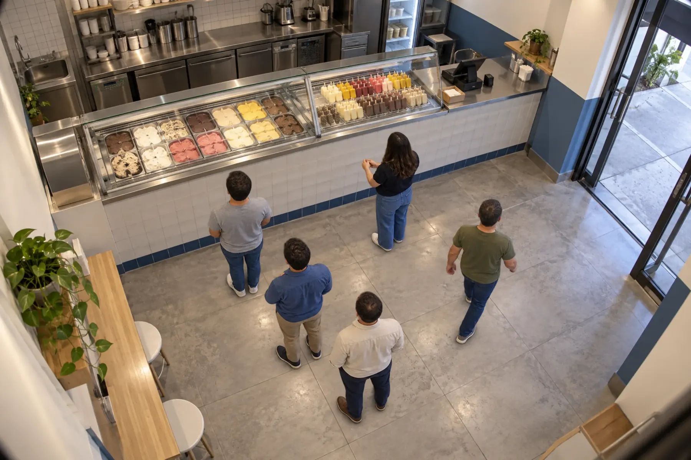
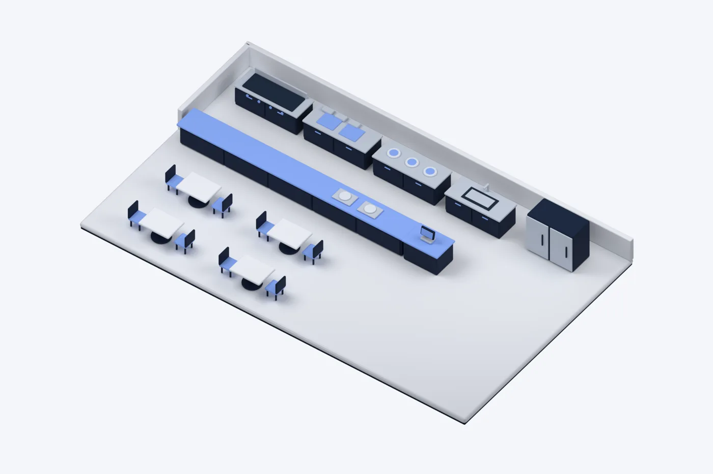
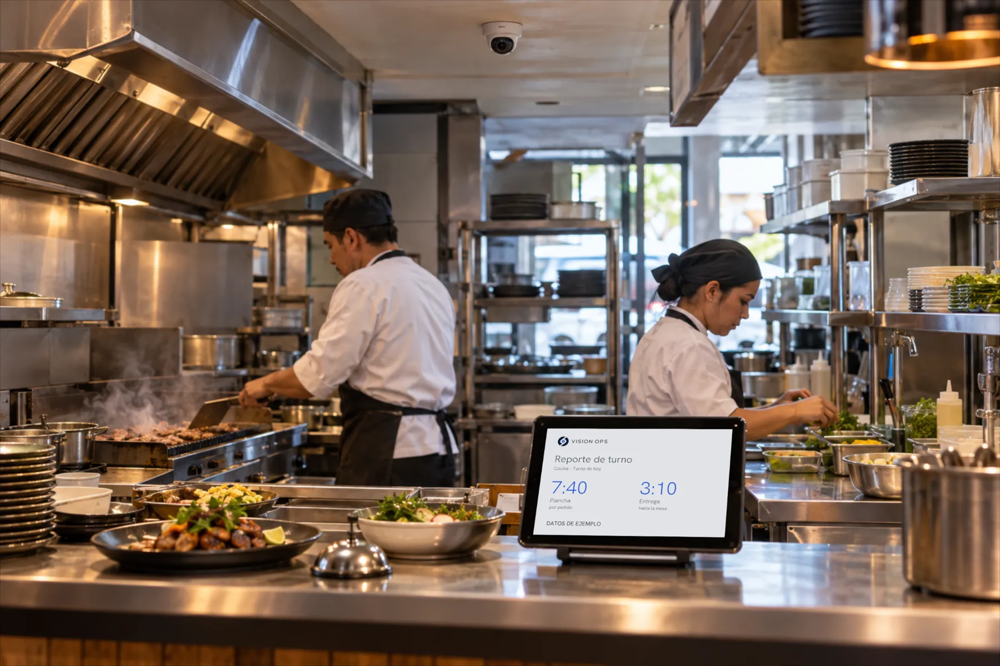
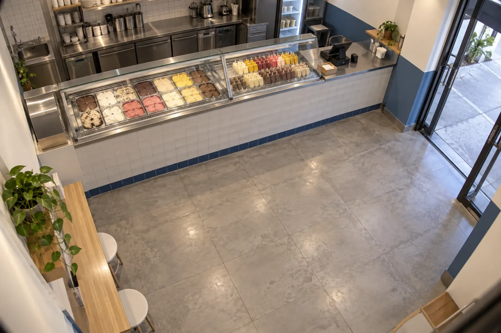
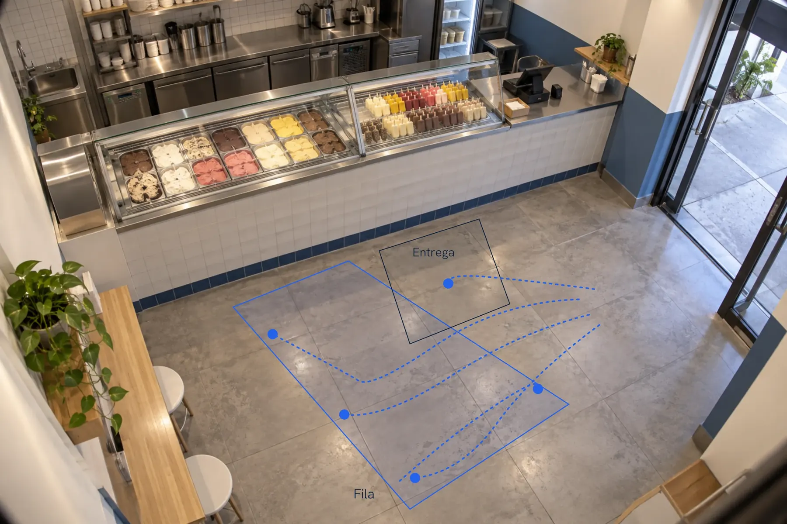

Una venta se fue.
La cámara tenía la respuesta.
Alguien esperó 41 segundos en una paletería y se fue. Vision Ops convirtió ese momento en un hallazgo para decidir cómo atender la fila.
Hallazgo real · un sábado en una paletería
Analítica de datos con visión artificial. Hoy empezamos por restaurantes y comercios de comida, sin reconocimiento facial.

41 segundos de espera
Tus cámaras ya ven tu negocio. Nosotros lo convertimos en datos.
Vision Ops es la analítica de datos de Alba Vision: conecta las cámaras que ya tienes y convierte lo que pasa en tu operación en tiempos, zonas, hallazgos y decisiones.
En operación · empezamos por restaurantes y comercios de comida
Baja para ver cómo funciona
- Lo que se detectaPersonas, carga o piezas: todo lo que se mueve frente a la cámara se vuelve un punto anónimo. Nunca una cara.
- Los recorridosVision Ops sigue cada punto mientras está en cuadro y reconstruye por dónde pasó.
- Las zonas y sus tiemposEl piso se divide en zonas: cuánto se espera, cuánto se tarda y cuánto se usa cada una.
- Los patronesDía con día aparecen las horas pico y los lugares donde todo se acumula.
- El hallazgoLo que importa se marca solo, con el fotograma que lo sostiene.
- El tableroTodo llega a un reporte claro, y le puedes preguntar en tus palabras.

En tu operación, todos los días.

No una tabla. Una frase que puedes usar.
- El reporteCada día, por correo, con los hallazgos en español.
- La evidenciaEl fotograma que sostiene cada número.
- Las cuentasCada cifra se comprueba antes de enviarse.
- Pregúntale«¿A qué hora hubo más gente?» y te contesta con tus datos.
Correo · Reporte diario
Vision Ops
«Se te fue una venta a las 6:12 pm: alguien esperó 41 segundos en la fila y se fue. Con este volumen necesitas otra persona en el mostrador a esa hora.»
Un hallazgo real, de un sábado en una paletería.
- Entró en la fila
- 18:11:19Comprobado
- Salió sin pedir
- 18:12:00Comprobado
- Tiempo de espera
- 41 sComprobado
- Resultado
- 1 abandonoComprobado
18:12:00 − 18:11:19 = 41 segundos
Datos de ejemplo: así se comprueba cada cifra antes de enviarse.
¿A qué hora hubo más gente?
Entre las 6 y las 7 pm: 46 personas.
Un día de operación, en veinte segundos.
6 pm
6 personas en la fila. La hora con más espera.

De la primera cámara a toda la operación.
- DiagnósticoQué quieres saber y qué cámaras ya tienes.
- PilotoUna cámara, unas semanas y números reales de tu operación.
- IntegraciónUn conector en tu red lee el video, sin abrir puertos ni cámaras nuevas.
- EscalamientoMás cámaras y más sucursales. El precio va por cámara.
Contamos lo que pasa. No reconocemos a nadie.

- Sin reconocimiento facialDetecta siluetas y las sigue mientras están en cuadro. No sabe quién es nadie.
- Cifrado y se borraEl video viaja cifrado y el original se borra solo a los 30 días.
- Sólo la evidenciaSe guarda el instante de cada hallazgo, y se borra con el resto.
- El conector es tuyoLee sólo el video que autorizas y lo quitas cuando quieras.
Empezamos por restaurantes.
Hoy Vision Ops analiza restaurantes, taquerías, food trucks y comercios de comida. Para almacenes, líneas de producción y otras operaciones, lo armamos a la medida.
Podemos empezar por aquí.
- La pregunta
- ¿Dónde se acumula la espera?
- La zona
- La fila y el mostrador
- Lo que recibirías
- Fotogramas, tiempos de espera y abandonos
Para empezar: 1 cámara. Lo confirmamos juntos en el diagnóstico.
Mándanos tu idea por WhatsAppSe abre WhatsApp con tu idea ya escrita; tú decides si la mandas.
¿Qué quieres saber de tu operación?
Cuéntanos qué pasa en tu negocio y qué cámaras tienes. Te decimos qué podemos medir y cómo empezar con un piloto.